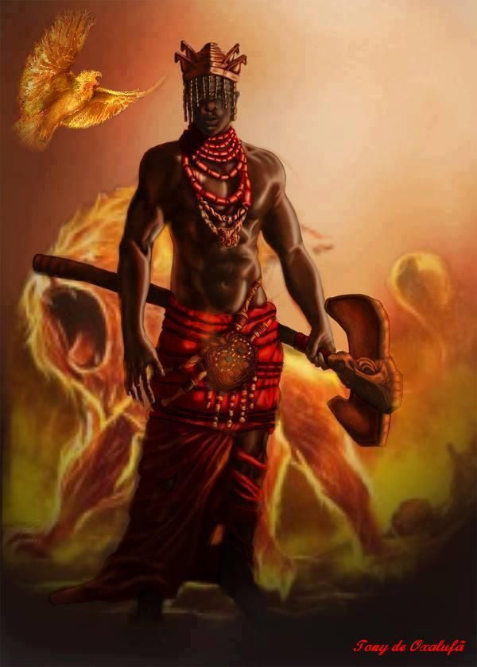

Oxalá é o pai maior,o mais respeitado de todos orixás.Possui muitos nomes: Oxalufã (Oxalá mais velho), Oxaguiã (Oxalá mais novo), Obatalá ou Orixanlá. Olorum(o pai criador) deixou oxalá encarregado de manifestar no mundo a sua criação,sendo assim oxalá é responsável pela criação da Terra,dos seres humanos,da vida e da morte.
O símbolo de oxalá é uma espécie de cajado de metal,que o auxilia a caminhar(já que é velho) chamado opaxorô.
A cor de oxalá é o branco e seu dia da semana é sexta-feira.Sua oferenda é:milho branco cozido(sem sal), rosas brancas e vinho branco doce.O dia de sua homenagem é vinte e cinco de dezembro.Sua saudação é “Êpa Babá!”
Oxalá representa a paz e o amor incondicional.É um orixá do equilíbrio, que acalma,sereno e dócil.Sendo essas características marcantes em seus filhos de fé.

Oxum é a senhora das águas doces,a grande mãe do amor e da fertilidade.Oxum representa a beleza, a juventude, a vaidade e a plenitude do amor. Por isso, costuma ser solicitada para resolver problemas amorosos e financeiros. A doçura e amorosidade são a sua marca.
O símbolo de oxum é uma abebé (leque em forma circular que pode vir com espelho).
A cor de oxum é o amarelo e seu dia da semana é sábado.Sua oferenda é: feijão fradinho e frutas como pêssego, melão amarelo e banana ouro.O dia de sua homenagem em alguns lugares é doze de outubro e em outros oito de dezembro.
É comum que seus filhos sejam chorões e muito vaidosos.Sua saudação é Aiê ieu Mamãe Oxum"
Oxossi é caçador e possui grande poder da cura,ele representa a pureza das matas, tem um grande conhecimento sobre as ervas,ele é o rei das matas e guardião dos mistérios da floresta.Oxossi representa o espírito da honestidade,aliado da justiça que deseja transformar o mundo em um local melhor para se conviver.
O símbolo de oxossi é um arco e flecha.
A cor de oxossi é o verde e seu dia da semana é quinta-feira.Sua oferenda é: fruta,milho cozido,cerveja servida em coité e ervas e plantas verdes.Sua homenagem é no dia vite de janeiro.
É comum que seus filhos sejam honestos,desinteressados,espontâneos e altruístas.Sua saudação é "Oké Arô"
Xangô é o Senhor da Justiça, o Orixá da Lei,é considerado de grande poder.Se pedir justiça a xangô,tenha certeza que seja realmente justa,pois ele olhará os dois lados da situação.Ele é a representação de um grande líder, espírito maduro aquele que conhece o bem e o mal.
O símbolo de xangô é um oxé(machado de duas lâminas).
A cor de xangô é o marrom e seu dia da semana é quarta-feira.Sua oferenda é:flores marrons,cerveja preta,fumo e o famoso amalá de xangô.Sua homenagem é no dia trinta de setembro(dia de morte de São Jerônimo).
É comum que seus filhos geralmente tenham um temperamento forte e realizadores de grandes conquistas.Sua saudação é “Caô Cabiecilê”
Ogum representa o espírito da lei,ele é considerado um soldado e guardião,pois representa a luta e a vitória.Ele é forte, corajoso,duro e inflexível e poucos são os que desafiam o seu poder.
O principal símbolo de ogum é uma espada.
A cor de ogum é vermelho,branco ou azul(depende do centro espírita) e seu dia da semana é terça-feira.Sua oferenda é: inhame, feijão preto,vinho e cerveja,muitos templos fazem a feijoada de ogum anualmente para homenageá-lo.Sua homenagem é no dia vinte e três de abril.
É comum que seus filhos sejam inquietos,não gostam de injustiça com os mais fracos,traição ou dissimulação,os filhos de ogum geralmente tem o gênio forte.Sua saudação é “Ogunhê, Meu Pai”
Obaluaê é um orixá responsável por encaminhar as almas ao mundo dos mortos,é o orixá que possui cobhecimento sobre as doenças, pestes e perdas.É considerado também o protetor dos animais.
Seus trabalhos geralmente são entregues nos cemitérios,pois la é o seu campo de força.
A cor de Obaluaê é o preto e seu dia da semana é segunda-feira.Sua oferenda é: pipoca estourada com areia da praia ou azeite de dendê e coco,são entregues em um alguidar de barro.Sua homenagem é no dia dezesseis de agosto.
É comum que seus flhos sejam fechados,calados,muito sentimentais e frequentemente podem serv muito negativistas.Sua saudação é “Atotô Abaluaiê”
Iemanjá simboliza o amor maternal e puro,a abundância e fertilidade.Sua imagem é uma linda mulher de cabelos negros e longos .Diz-se que iemanjá é uma mulher vaidosa e gosta de receber presentes como perfumes,flores e espelhos.
O principal símbolo de iemanjá é um abebé prateado.
A cor de iemanjá é o azul e seu dia da semana é o sábado.Sua oferenda é:rosas brancas ou azuis,perfume de alfazema e champanhe branca.Sua homenagem é no dia dois de fevereiro.
É comum que seus filhos sejam emotivos,são raras as vezes que tomam atitudes agressivas,geralmente são chamados de chorões.Sua saudação é “Odoyá”
Iansã é uma deusa guerreira,orixá dos ventos e tempestades,representa os raios de luz da manhã,também é uma divindade do fogo(como xangô).Ela representa a necessidade de mudança,rapidez de raciocínio,coragem e lealdade.
O principal símbolo de Iansã é a espada,chifre de boi e o eruexim (rabo de cavalo).
Sua cor é amarelo ouro(do raio da manhã),apesar de alguns templos utilizarem o vermelho e o seu dia da semana é quarta-feira. Sua oferenda é: acarajé,vinho rosé e flores amarelas.Sua homenagem é no dia quatro de dezembro.
É comum que seus filhos tenham um temperamento forte,personalidade marcante e pessoas que mudam de opinião facilmente.Sua saudação é “Epahey Oyá!”
Nanã é a senhora da criação,é respeitada como a mais velha orixá.Com seu temperamento dócil ela acolhe e orienta seus filhos.Ela representa a velhice,experiência da vida e aprendizados mais profundos.
O principal símbolo de nanã é um ibiri.
Suas cores são o lilás,roxo e branco,seu dia da semana é sábado ou segunda(varia em alguns templos).Sua oferenda é:batata doce,jabuticaba, ameixa e vinho licoroso rosé.Sua homenagem é no dia vinte e seis de julho.
É comum que seus filhos sejam possessivos,muito dedicados com suas amizades e parentes e rancorosos.Sua saudação é “Salubá Nanã“Logunedé é um orixá da pesca e da caça,filho de oxum e oxóssi.Logunedé apresenta em suas características expressões femininas e masculinas, o que faz parecer em algumas representações (girias) da umbanda ou do candomblé como uma figura jovem.
O seu principal símbolo é um ofá,lança de caça e um ogue.
Sua cor é o amarelo ouro e o azul turquesa,seu dia da semana é quinta-feira.Sua oferenda é:coco seco,milho e feijão fradinho.Sua homenagem é no dia dezenove de abril.
É comum que seus filhos sejam pessoas indesisas,dificilmente sabem o que querem e até mesmo suas emoções são um pouco indefinidas, carismáticos e elegantes.Sua saudação é "Loci,loci, logun!"